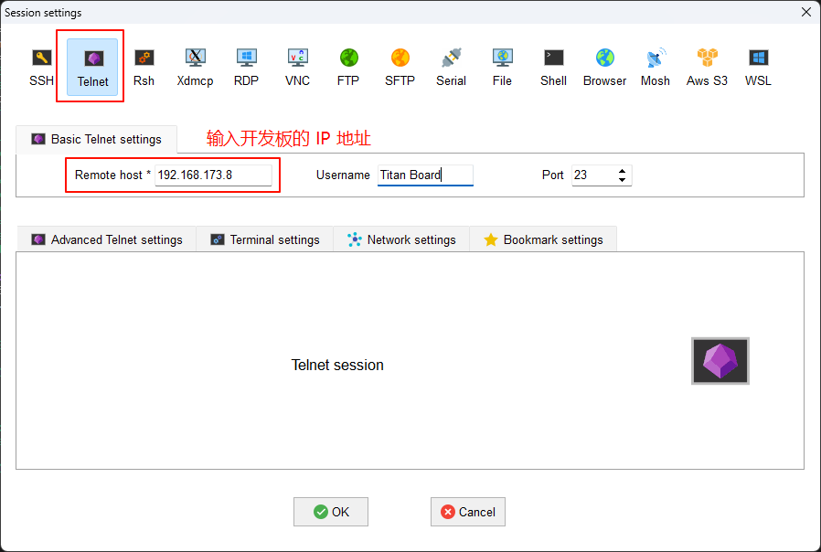

Netutils Usage Instructions
English | Chinese
Instruction
netutils is a package that contains many simple and easy to use network tools. Using this package, developers can bring a lot of convenience when debugging network functions. When you need to use some network debugging gadgets, all you need is the netutils package, the Swiss Army knife of network functionality debugging.
This routine shows how to use the various features of the netutils package on the Titan Board development board.
Hardware Description
This routine needs to rely on the WiFi module on the Titan Board to complete the network communication, so please ensure that the WiFi module on the hardware platform can work properly.
FSP Configuration
First you need to configure Flash. See the README.md in the
Titan_component_flash_fsproject for the Flash configuration.Next, configure SDHI1 and create a
r_sdhistack:

Configure SDHI1 stack:
Configure SDHI1 pins:
RT-Thread Settings Configuration
Add the netutils package to enable the web tools you want to use.
Software Description
The source code for this routine is located at /project/Titan_component_netutils.
Description of netutils package file structure
Here is a breakdown and summary of the RT-Thread netutils packages functionality:
Name |
Classification |
Function Introduction |
|---|---|---|
Ping |
Debug tests |
Using the ping command can check whether the network is connected, can be a good help us to analyze and determine the network failure |
NTP |
Time synchronization |
Network time protocol |
TFTP |
File transfer |
TFTP is a simple protocol for transferring files that is even lighter than FTP |
Iperf |
Performance tests |
Maximum TCP and UDP bandwidth performance is tested and bandwidth, delay jitter and packet loss can be reported |
NetIO |
Performance tests |
A tool for testing the throughput of a network |
Telnet |
Remote access |
You can remotely log into the Finsh/MSH Shell of RT-Thread |
tcpdump |
Network debugging |
Tcpdump is a network packet capture tool for RT-Thread based on lwIP |
The file structure of the netutils software package is as follows:
netutils // netutils folder
iperf // iperf Network Performance Test
netio // Netio Network Traffic Measurement Test
ntp // NTP Time Synchronization Function
ping // Ping Function
tcpdump // Network Capture Tools
telnet // Telnet server
tftp // TFTP Function
tools // Network Testing Tools
Compilation & Download
RT-Thread Studio: In RT-Thread Studios package manager, download the Titan Board resource package, create a new project, and compile it.
After compilation, connect the development boardsUSB-DBG interface to the PC and download the firmware to the development board.
Run Effect
Mount the file system
Since the TFTP function requires the support of the file system when transferring files within the system, the system will initialize the file system-related functions during its initialization process. The normal initialization prompt message for the file system is as follows:
\ | /
- RT - Thread Operating System
/ | \ 5.2.0 build Sep 1 2025 14:02:13
2006 - 2024 Copyright by RT-Thread team
lwIP-2.0.3 initialized!
[I/sal.skt] Socket Abstraction Layer initialize success.
Hello RT-Thread!
===========================================================
This example project is an driver wifi routine(hyperflash)!
===========================================================
[I/drv.ospi_flash] Get flash id: 0x021a5bef
[I/drv.ospi_flash] OSPI flash initialized successfully
[D/FAL] Flash device | ospi_flash | addr: 0x90000000 | len: 0x04000000 | blk_size: 0x00001000 |initialized finish.
[I/FAL] ==================== FAL partition table ====================
[I/FAL] | name | flash_dev | offset | length |
[I/FAL] -------------------------------------------------------------
[I/FAL] | whd_firmware | ospi_flash | 0x00000000 | 0x00080000 |
[I/FAL] | whd_clm | ospi_flash | 0x00080000 | 0x00080000 |
[I/FAL] | download | ospi_flash | 0x00100000 | 0x00200000 |
[I/FAL] | easyflash | ospi_flash | 0x00300000 | 0x00100000 |
[I/FAL] | filesystem | ospi_flash | 0x00400000 | 0x00c00000 |
[I/FAL] =============================================================
[I/FAL] RT-Thread Flash Abstraction Layer initialize success.
[I/FAL] The FAL MTD NOR device (filesystem) created successfully
[I/wifi] Filesystem initialized!
msh />WLAN MAC Address : 2C:B0:FD:A2:2D:60
WLAN Firmware : wl0: Mar 28 2021 22:55:55 version 7.45.98.117 (dc5d9c4 CY) FWID 01-d36e8386
WLAN CLM : API: 12.2 Data: 9.10.39 Compiler: 1.29.4 ClmImport: 1.36.3 Creation: 2021-03-28 22:47:33
WHD VERSION : 3.1.0.23284 : v3.1.0 : GCC 13.2 : 2024-03-21 22:57:11 +0800
[I/WLAN.dev] wlan init success
[I/WLAN.lwip] eth device init ok name:w0
[I/WLAN.dev] wlan init success
[I/WLAN.lwip] eth device init ok name:w1
Connect to Wi-Fi
After the program runs, it will enter the MSH command line and wait for the user to configure the device to connect to the network. Use the MSH command wifi join ssid password to configure the network, as shown below:
msh />wifi join ssid_test password
join ssid:ssid_test
[I/WLAN.mgnt] wifi connect success ssid:ssid_test
msh />[I/WLAN.lwip] Got IP address : 192.168.173.8
Ping tool
Ping is a network diagnostic tool used to test whether data packets can reach a specific host via the IP protocol. It estimates the packet loss rate (packet loss ratio) between the host and the device and the round-trip time of the packets.
Ping domain
msh />ping www.rt-thread.org
ping: not found specified netif, using default netdev w0.
60 bytes from 120.222.223.251 icmp_seq=1 ttl=48 time=76 ms
60 bytes from 120.222.223.251 icmp_seq=2 ttl=48 time=54 ms
60 bytes from 120.222.223.251 icmp_seq=3 ttl=48 time=74 ms
60 bytes from 120.222.223.251 icmp_seq=4 ttl=48 time=74 ms
--- 120.222.223.251 ping statistics ---
4 packets transmitted, 4 received, 0% packet loss
minimum = 54ms, maximum = 76ms, average = 69ms
msh />
Ping IP
msh />ping 192.168.173.247
ping: not found specified netif, using default netdev w0.
60 bytes from 192.168.173.247 icmp_seq=1 ttl=64 time=42 ms
60 bytes from 192.168.173.247 icmp_seq=2 ttl=64 time=44 ms
60 bytes from 192.168.173.247 icmp_seq=3 ttl=64 time=24 ms
60 bytes from 192.168.173.247 icmp_seq=4 ttl=64 time=24 ms
--- 192.168.173.247 ping statistics ---
4 packets transmitted, 4 received, 0% packet loss
minimum = 24ms, maximum = 44ms, average = 33ms
msh />
NTP tool
NTP is the Network Time Protocol, which is a protocol used to synchronize the times of various computers in a network. The netutils software package implements the NTP client. After connecting to the network, one can obtain the current UTC time and update it to the RTC.
The effect of the MSH command is as follows:
msh />ntp_sync
[I/ntp] Get local time from NTP server: Mon Sep 1 15:15:35 2025
msh />
TFTP tool
TFTP (Trivial File Transfer Protocol, Simple File Transfer Protocol) is one of the protocols within the TCP/IP suite, used for transferring files between a client and a server. A simple protocol for file transfer between the server and the client, providing a straightforward and low-cost file transfer service. The port number is 69, which is different from the traditional one. The FTP protocol is much more lightweight and is suitable for use in small embedded products. The preparation for the TFTP tool requires the following two steps:
The installation file for the TFTP client is located at packages/netutils/tools/Tftpd64-4.60-setup.exe. Before using TFTP, please install this software first.
To start the TFTP server before transferring files, you need to use the Finsh/MSH commands on RT-Thread to initiate the TFTP server. The general effect is as follows:
msh />tftp -s
tftp server start!
msh />
Connect to the RT-Thread operating system and send files
Open the newly installed Tftpd64 software and follow the steps below to configure it: Tftp Client
In the Server interfaces dropdown box, make sure to select the network card that is in the same network segment as RT-Thread.
Enter the IP address of the TFTP server. You can view it using the ifconfig command in the MSH of RT-Thread.
Enter the port number of the TFTP server. The default is 69.
Select the file to be sent. Remote File is the path (including the file name) where the file is saved on the server side. The options support both relative and absolute paths. Since RT-Thread by default enables the DFS_USING_WORKDIR option, at this time the relative path is based on the current directory entered by MSH. Therefore, when using a relative path, be sure to switch the directory in advance.
Just click the Put button.
Note: If DFS_USING_WORKDIR is not enabled and the Remote File is empty, the file will be saved in the root directory.
View the files sent by PC in MSH:
msh />ls
Directory /:
test.txt 16
msh />cat test.txt
Hello RT-Thread!
msh />
Retrieve the file from RT-Thread
First, create a text file in the root directory and enter the content Hello!
msh />echo "Hello!" test1.txt
msh />cat test1.txt
Hello!
msh />
In the Tftpd64 software, enter the path (including the file name) of the file to be received and saved.
Remote File is the file path (including the file name) that the server is waiting to receive back. The option supports both relative and absolute paths. Since RT-Thread by default enables the DFS_USING_WORKDIR option, at this time, the relative path is based on the current directory entered by Finsh/MSH. Therefore, when using a relative path, be sure to switch the directory in advance.
Just click the Get button. As shown below, save /test1.txt to the local disk. Here, an absolute path is used.
The following picture is the file obtained from RT-Thread:
Telnet tool
Telnet is a TCP-based remote terminal protocol used for remotely logging into the command line interface of devices over a network. Through Telnet, one can remotely access the command line of the development board from a PC, enabling debugging, monitoring, and control. To use the Finsh/MSH commands to start the telnet service on RT-Thread, the general effect is as follows:
msh />telnet_server
Telnet server start successfully
msh />telnet: waiting for connection
Next, use the remote connection tool to connect to the development board.

After the connection is successful, you can remotely control the development board.
\ | /
- RT - Thread Operating System
/ | \ 5.2.0 build Sep 1 2025 14:02:13
2006 - 2024 Copyright by RT-Thread team
msh />
msh />
msh />list device
device type ref count
------------ -------------------- ----------
telnet Character Device 2
w1 Network Interface 1
w0 Network Interface 1
wlan0 Network Interface 1
wlan1 Network Interface 1
filesystem MTD Device 1
rtc RTC 0
uart8 Character Device 0
pin Pin Device 0
msh />
More online tools
In addition to the commonly used network tools mentioned above, the netutils software package also provides some useful network tools for development and debugging, such as the NetIO tool, Iperf tool and tcpdump tool. The usage methods of these tools can be referred to the instruction files in the software packages function directory.